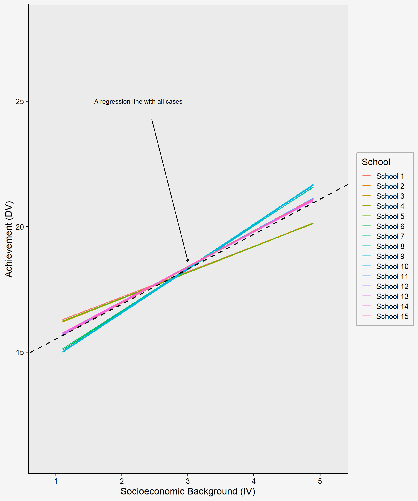
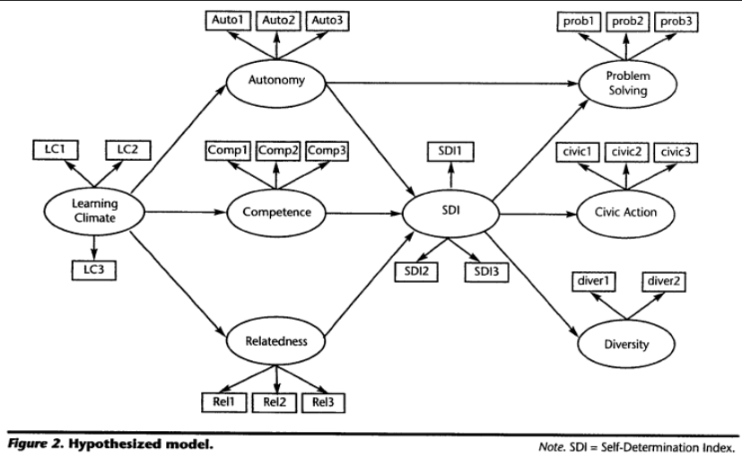
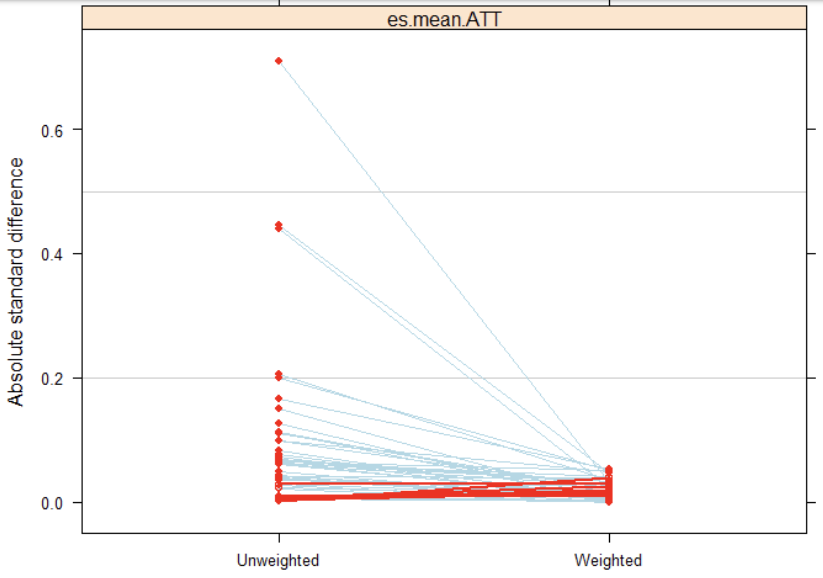
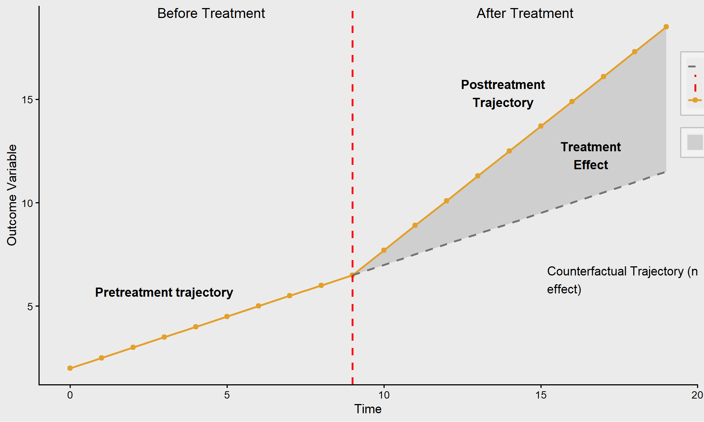
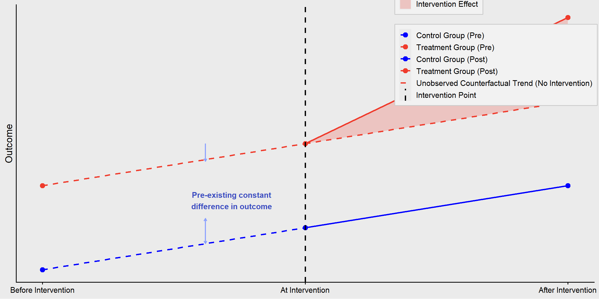

14 Chapter 14
Advanced Quantitative Methods
Learning Objectives
By the end of this chapter, you will be able to:
Recognize advanced statistical techniques, such as multilevel modeling, structural equation modeling, and meta-analysis, to address complex research questions in educational settings, accounting for nested data structures and latent constructs.
Describe the appropriateness, strengths, and limitations of various advanced quantitative methods, ensuring alignment with research questions, theoretical frameworks, and the unique characteristics of educational data.
Differentiate between advanced analytical techniques and determine when each is most suitable for handling hierarchical data, modeling relationships among latent variables, or synthesizing research findings.
Educational research is a dynamic field that frequently challenges researchers to delve deeper into complex questions about teaching, learning, and policy. Designed for those seeking to expand their methodological toolkit beyond foundational techniques such as multiple regression and ANOVA, and rigorously investigate educational phenomena, this chapter introduces key advanced methods, such as multilevel modeling (MLM), factor analysis, structural equation modeling (SEM), and meta-analysis. These methods are often used to explore important questions in education because they are particularly suited to the complexities inherent in education research, allowing for analyses that account for group-level predictors, interactions, and longitudinal effects. Researchers who are eager to learn more about these methods should consult additional resources, as this chapter provides only an introduction. It is also important to note that these techniques represent only a selection of the tools available. Given the nested and multifaceted nature of educational data, where understanding group-level predictors, interactions, and longitudinal effects is critical, researchers are encouraged to explore additional methods beyond those covered here.
Each method discussed in this chapter is contextualized within the unique challenges and opportunities of educational research, with a focus on practical application and theoretical alignment. We hope that knowledge of these advanced methods ensures that your contributions are both innovative and impactful, driving meaningful progress in education.
14.1 Multilevel Modeling
One key assumption in most of the methods we covered throughout this book is independence of observations. The assumption means that no individual outcome is dependent on the outcomes of other individuals in the sample. Does this sound like how things really work in education?
Education data are inherently nested: students are nested in classes, which are nested in schools, which are nested in communities. Because of these shared contexts, students in the same groups (e.g., same classroom or teacher) typically have more in common with one another than with students outside the group. Multilevel modeling (MLM), also known as hierarchical linear modeling (HLM), is a statistical technique designed to analyze data that are organized at more than one level (i.e., nested or hierarchical). One key reason to use MLM is that it helps avoid violating the independence assumption found in standard regression methods. In standard (single-level) regression we learned earlier in this book, we assume that all data points are independent; however, with students clustered within classrooms and schools, this assumption does not hold. MLM accounts for the nested nature of the data when estimating relationships, providing more accurate results and standard errors. Note that, although MLM can also be used for longitudinal investigations, this chapter focuses on cross-sectional MLM, which is appropriate for data collected at a single point in time, to explain the basic concepts.
Another major reason to use MLM is that you can ask new types of research questions, such as:
Impact of contextual effects (predictors) on individual outcomes. For example, if you are interested in the effect of teacher characteristics on a student-level outcome, those characteristics are really classroom-level variables, even though we sometimes treat them as if they were student-level characteristics in analysis.
Exploration of group variation in the individual-level IV-DV relationship. For example, in a study across schools, each school might show a unique relationship between students’ socioeconomic background (the independent variable) and their achievement (the dependent variable). If you plot a line for each school, you might see that these slopes differ substantially across schools as shown in figure 14.1. In such a case, an analysis that ignores the nesting effect can oversimply our understanding of educational phenomena and may yield invalid results by ignoring the possible contextual impact in which students are embedded.
Exploration of cross-sectional interactions. This examines the degree to which a predictor at one level (e.g., a classroom- or school-level characteristic) modifies the relationship between two variables at another level. For example, you might investigate the extent to which teacher experience (a school-level variable) moderates the impact of student motivation (an individual-level variable) on academic performance (an individual-level outcome). This is often called a cross-level interaction because it involves variables from different levels of the data hierarchy. Such an interaction is difficult to capture accurately with single-level regression analysis.
When you read about multilevel models, you will see the phrases “means as outcomes” and “slopes as outcomes.”
The first looks for differences in group means as the dependent variable in a multilevel model. For example, the average achievement by school can be modeled with group-level predictors, like the composition of the student body or teacher experience, explaining variation in school means. Additionally, student-level predictors can be included to refine individual-level variance all within one model.
The second looks for differences in the effect of the student predictor on outcomes based on the group. This examines whether group-level predictors moderate the relationship between student-level predictors and outcomes, which is known as a cross-level interaction, mentioned earlier.
One of the first steps you take with MLM is to figure out how much of the variation in outcomes is due to individual-level differences and how much is due to group-level differences, a measure known as intra-class correlation (ICC). The greater the proportion of variation attributed to group differences, the more important it is to use MLM. You can use MLM within an experimental design if there is random assignment to groups, or in observational studies based on either a natural grouping of individuals or a clustered sampling design.
One challenge with MLM is the need for a large sample size, particularly when you are trying to include any group-level variables. This is because, at the group levels, the number of groups (rather than individuals) serves as your sample size for part of the analysis. A common rule of thumbs suggests a minimum of 20-30 groups with at least 20-30 individuals per group (Huang, 2018; Maas & Hox, 2005). However, the exact sample size requirement depends on the specific focus of the analysis and should ideally be determined through power analysis rather than relying solely on general rules of thumb. Regardless of the precise sample size needed at each level, MLM generally requires a large dataset to ensure reliable estimates and sufficient statistical power.
14.2 Factor Analysis & Structural Equation Modeling
Factor analysis and structural equation modeling (SEM) are closely related statistical techniques that help researchers understand complex relationships between observed and latent variables. Factor analysis serves as the foundation for SEM, as both methods focus on measuring latent constructs that are not directly observable. In educational research, latent constructs (psychological constructs and traits), such as student engagement, academic motivation, self-efficacy, or teaching effectiveness, cannot be measured directly but can be inferred through multiple survey items or assessments. Factor analysis is used to identify underlying structures within a dataset, grouping items based on shared variance. For example, a student engagement survey might contain a set of items about participation and effort, each of which measures a student’s level of different types of engagement behavior. Instead of analyzing these items individually as variables, factor analysis groups these items into a single “engagement” factor, allowing researchers to estimate an overall engagement level based on the responses to these items.
However, when these latent constructs are incorporated into a broader framework that examines how they relate to each other, the result is SEM. SEM extends factor analysis by allowing researchers to test theoretical models that specify how unobservable constructs like engagement, motivation, and achievement influence one another. For example, does academic motivation lead to higher engagement, which in turn enhances achievement? By modeling these relationships while accounting for measurement error, SEM provides a more precise way to test educational theories and evaluate complex learning processes. Now let’s examine each method in more detail.
Factor analysis is a statistical method commonly used in measurement research to assess the validity and structure of a construct by identifying underlying structures or patterns within a set of observed variables. It is often applied to determine whether survey or test items effectively measure the intended construct and to reduce the dimensionality of data by grouping variables into clusters (or “factors”) based on shared variance. These factors often represent latent constructs such as intelligence, motivation, or satisfaction that cannot be directly measured, but is inferred from multiple observed indicators (e.g., a set of numeric variables). These indicators are typically measured on a continuous scale or a Likert-type scale, rather than being dichotomous (e.g., yes/no responses). To reliably measure a latent construct, researchers generally include at least three observed indicators per construct in their model.
There are two main types of factor analysis:
Exploratory Factor Analysis (EFA): EFA is used when researchers do not have a predefined structure in mind and aim to explore potential factor groupings within the data. This is often applied in early-stage research to identify how variables cluster together and to get insights into refining a measurement of latent constructs. In education research, EFA is frequently applied for the following purposes:
Developing and refining psychological and educational assessments. For example, EFA can help identify the underlying dimensions of a new psychological scale designed to measure student motivation. Researchers can use EFA to analyze responses from the new scale to determine how items naturally group together and whether they effectively capture different aspects of motivation. The results of EFA can provide insights into revising the scale by refining or eliminating items that do not align well with the intended construct.
Identifying the hidden patterns in responses to a set of questions. For example, researchers might use EFA to examine responses to a classroom climate survey, uncovering what factors emerge in students’ perceptions, like teacher support, peer collaboration, and engagement as distinct components.
Reducing the number of variables in large datasets. EFA can serve as a data reduction technique by identifying redundant or highly correlated variables and summarizing them into a smaller set of meaningful factors. For example, in a large-scale education study that collects data on students’ study habits, data may be collected on variables such as time spent on different subjects, use of learning resources, time management strategies, and preferred study environments. EFA might reveal that these items load onto just two underlying factors: “Time Investment” and “Study Strategies.” This exploratory approach simplifies the dataset while preserving key information about student learning behaviors.
Confirmatory Factor Analysis (CFA): CFA is used when researchers have a theoretical model specifying how variables should load onto factors and seek to test whether the data fit this predefined structure. It is commonly applied in validation studies to evaluate the extent to which a measurement model appropriately represents the intended constructs. In education research, CFA is frequently applied for the following purposes:
Testing the structure of psychological and educational assessments. For example, researchers can examine whether a measurement model provides evidence supporting the intended interpretation of scores, an essential aspect of validity. For instance, if motivation consists of intrinsic motivation, extrinsic motivation, and self-efficacy as distinct but related factors, CFA can be conducted to statistically test whether this three-factor structure fits the data. If the CFA results indicate good model fit, researchers gain supporting evidence that the scale effectively captures the theorized dimensions of motivation.
Assessing measurement invariance across different student groups. CFA can be used to evaluate whether a scale functions consistently across diverse populations, such as by grade level, or cultural background. For instance, a researcher may use CFA to examine whether an academic stress scale measures the same construct equally across middle school and high school students. This ensures that differences in academic stress scores reflect actual differences in students’ stress levels rather than differences in how students at different grade levels interpret or respond to the scale items.
Structural Equation Modeling (SEM) is an advanced statistical technique that integrates factor analysis and multiple regression to examine complex relationships among both observed and latent variables. SEM is used when researchers have a theoretical model that specifies how latent constructs influence observed responses and how these constructs relate to each other. The model is informed by theory and/or prior research, and SEM allows researchers to test how well the data fit this predefined model.
SEM offers several advantages over linear regression, including:
The capability to analyze complex relationships among latent constructs. For example, an SEM can have more than one dependent variable (both observed and unobserved), and incorporate mediating variables at the same time. Unlike traditional regression, SEM distinguishes between exogenous and endogenous predictors. An endogenous variable is one that predicts the dependent variable but is itself predicted by another independent variable. Therefore, SEM enables researchers to explore a more comprehensive representation of causal relationships.
The ability to deal with complex constructs that are difficult to measure directly or require multiple indicators, while also allowing for the specification of measurement errors, resulting in a more accurate model.
When conducting SEM, sample size considerations are crucial. A commonly used guideline suggests having 5 to 10 participants per estimated parameter in the model. Although the required sample size depends on aspects such as model complexity, the number of estimated parameters, and other data characteristics. In general, a minimum of 200 participants is recommended for stable estimation, but very simple models with fewer parameters may be feasible with around 150 participants. However, for more complex models, larger samples (e.g., 400+) may be necessary to ensure reliable results and sufficient statistical power. It is important to note that recommendations may vary across the literature, and best practice is to conduct a power analysis to determine an appropriate sample size based on the specific model and research context.
Figure 14.2 is from a study on self-determination theory by Levesque-Bristol et al (2011). Each oval is a latent construct that predicts answers to survey items, represented by rectangles. The authors expect that learning climate affects student motivation (SDI) through the mechanisms of autonomy, competence, and relatedness. Then they suggest that motivation leads to problem solving (which is also directly affected by autonomy), civic action, and diversity – and each of these constructs is represented by specific items (or groups of items).
In SEM, the measurement model and structural model serve distinct but complementary purposes in analyzing relationships among variables. The measurement model focuses on the relationship between latent constructs (unobserved variables) and their observed indicators (measured variables). It defines how well the observed variables represent the latent constructs by assessing factor loadings and measurement errors. In the example represented in Figure 14.2, a latent construct like “autonomy” was measured by three observed variables (Auto1-Auto3), which is evaluated by factor analysis to ensure that indicators reliably measure the intendent construct. The structural model focuses on the relationships between latent constructs, specifying how one construct influences another. It examines direct and indirect relationships between variables, allowing researchers to test hypotheses about causal or theoretical relationships among constructs. Unlike the measurement model, it does not focus on how latent variables are measured but rather on how they interact with one another. In Figure 14.2, the structural relationships are represented by arrows connecting one latent construct to another. For example, the path from learning climate to autonomy to SDI indicates that learning climate indirectly impacts SDI, with autonomy serving as a mediator. Significance tests on these paths examine the hypothesis, and SEM simultaneously tests multiple paths within the model.

14.3 Meta-Analysis
Meta-analysis is a special term for quantitative synthesis, which is a type of systematic review of the literature. When there are a lot of studies on a topic, but they have inconsistent results, we can get into “vote counting” – where you simply tally how many show a significant result versus a non-significant result, with the majority appearing to “win.” However, such an approach overlooks important differences between studies that may explain the variability in findings. For example:
Some interventions are more effective than others.
The way outcomes are measured (operationalization) may cause variation in results.
Differences in cultural contexts, target populations, sampling techniques, sample characteristics or sampling error can contribute to inconsistent findings.
Some studies are more methodologically rigorous than others, affecting the quality of their results.
Given these potential sources of variation, we want to ask: “To what extent do these differences have an impact on the reported findings?”
Meta-analysis differs from narrative review (literature review) as it takes a systematic, statistical approach to synthesizing research findings across multiple studies. Unlike narrative review, which summarizes findings qualitatively, meta-analysis synthesizes numerical effect sizes from systematically selected relevant studies to provide a quantitative estimate of the overall effect. By synthesizing quantitative findings from multiple studies, meta-analysis enhances statistical power, making its conclusions more reliable, reproducible, less prone to bias and more generalizable than those from a single study or a narrative review. Additionally, a key advantage of meta-analysis is its ability to identify influential sources of variability in reported results. When individual studies produce inconsistent findings, meta-analysis can reveal hidden patterns and account for differences across studies. In other words, researchers can use meta-analysis to examine the extent to which study characteristics, such as sample size, methodology, and demographics, influence effect sizes. Finally, meta-analysis helps identify gaps in literature through a systematic search and review of existing studies on a given topic. Collectively, meta-analysis provides deeper insights into evidence-based practices and improves our understanding of the research landscape within a selected field.
In a meta-analysis, researchers set three main research questions regarding:
Central tendency: the common effect (i.e., does X affect Y, and how strong is the effect?)
Variability: measuring the variation in effect sizes (i.e., is the average effect of X on Y consistent across studies or is there a significant degree of variability in the effects?)
Prediction: explaining why the variation occurs (i.e., a search for moderator variables; what variable changes the effect of X on Y?)
The outcome of interest in a meta-analysis is effect size, which demonstrates the direction and magnitude of effects. Common effect size used in a meta-analysis in education include:
Means comparisons (Cohen’s d)
Odds ratios
Risk ratios
Correlation coefficients (Pearson’s r)
As it is a quantitative synthesis, meta-analysis is appropriate when studies are empirical instead of theoretical, have quantitative results, have findings that can be configured in a comparable form (e.g., Cohen’s d, correlation, odds ratios), examine the same constructs and relationships, and are comparable given the question at hand. Some will claim that meta-analysis compares apples and oranges, meaning you are looking for a common effect among studies that are not really comparable. This concern often arises when studies differ significantly in terms of populations, interventions, methodologies, or outcome measures. To address this issue, we must be specific in defining our inclusion criteria of studies in a meta-analysis. This means carefully selecting studies that align with the research question by setting clear guidelines for: outcomes (definition of effect sizes), study design (e.g., experimental vs. observational studies), population characteristics (e.g., age groups, educational settings), measurement methods (e.g., how the outcome variable is operationalized), and intervention details (if applicable).
One of the most common questions in meta-analysis concerns the number of studies required. In theory, a meta-analysis can be conducted with just two studies, but in this case, it would only address central tendency (i.e., estimating an overall effect). To explore variation in effect sizes, at least three studies are needed, and to investigate potential sources of variation, a minimum of four studies is required. By now, you understand that determining an appropriate sample size for a statistical analysis depends on multiple aspects, and there is no single definitive answer (other than conducting the power analysis). The same applies when determining the sufficient number of studies for a meta-analysis as it depends on factors such as the degree of expected variation in findings across studies. Additionally, the feasibility of conducting a meta-analysis is highly topic-dependent. For example, in emerging research areas, such as AI applications in formal learning, research is rapidly expanding, but there may not yet be enough empirical studies available to support a robust meta-analysis. Finally, conducting a meta-analysis is often time-intensive, requiring careful study selection, data extraction, and statistical analysis. It is highly beneficial to work within a research team to improve efficiency and establish inter-rater reliability in study selection and coding, maintaining transparency in the research process. A collaborative approach ensures a more rigorous and systematic review process while reducing individual workload.
14.4 Causal Analysis
In social science research we are interested in identifying causal effects, but conducting randomized controlled trial experiments with random assignments is either difficult, impractical, or unethical in many cases. This limitation often forces us to rely on observational data, particularly in education research. As a remedy, one common approach researchers take is to use longitudinal data to establish temporal precedence (mentioned for causal relationships in Chapter 1), suggesting a potential cause precedes an associated outcome. Researchers then include as many control variables as possible into a regression model, hoping to isolate the effect of interest. However, despite these efforts, the results still come with a critical limitation: correlation does not imply causation. Typically, we acknowledge this limitation by adding a cautionary note about not assuming causal effect, and that is all we can do within a traditional regression framework.
To go beyond this, researchers turn to approaches that fall under what is referred to as a counterfactual framework, using a potential outcomes model. The fundamental challenge in causal inference is that we can never observe both potential outcomes for an individual (i.e., even in an experiment we can only observe one outcome per individual – either they receive the treatment, or they don’t.) We can’t measure the treatment effect by observing outcomes under both conditions. In an ideal experiment, we would compare the same person in both conditions to measure the true treatment effect, but this is impossible in reality.
Causal analysis methods attempt to approximate this missing counterfactual, essentially estimating what would have happened if the same individual had (or had not) received the treatment. Techniques such as matching methods (e.g., propensity score matching), instrumental variables, difference-in-differences, and regression discontinuity designs are commonly used to simulate experimental conditions in observational data. These approaches help strengthen causal claims by reducing selection bias and confounding factors, though they still rely on strong assumptions. We introduce each of these methods briefly.
14.5 Propensity Models
A propensity model is used to estimate the likelihood (or propensity) of an individual receiving a treatment or being exposed to a particular condition, based on observed characteristics. It is widely applied in observational studies to reduce bias and simulate the conditions of randomized experiments when random assignment is not feasible. The idea with propensity models is to understand a treatment effect by incorporating an individual’s propensity (or likelihood) to experience the treatment.
For example, a researcher wanted to understand the effect of using Advanced Placement (AP) credit on subsequent college course grades. However, students who use AP credits are not randomly assigned to do so and we know that some students (e.g., students with higher AP exam scores, SAT scores, or stronger academic preparation, etc.) are more likely to use AP credit than others. Because of this selection bias, one can’t just conduct a straight-up comparison of AP Users and AP Non-Users. If we were to do a straight-up comparison, any observed differences in college course grades might be due to pre-existing academic ability rather than the use of AP credit itself. In other words, AP users might have performed better in college courses anyway, regardless of whether they used AP credit. To get a more accurate estimate of the effect of AP credit use, the researcher had to account for students’ propensity to use their AP credit.
There are multiple approaches you can take to account for selection bias with a propensity model. One common method that researchers have traditionally used is propensity score matching – trying to find individuals in the control group who are similar (or “matched”) to individuals in the treatment group based on relevant characteristics. This can be a simple stratified matching (e.g., choose a few key variables and match within a range, such as SAT scores within 100 points + Free/Reduced Lunch yes/no). However, it can also get much more complicated if you use logistic regression to incorporate many different pre-treatment variables to estimate a propensity score and then match study participants by their propensity scores. The latter ensures a more comprehensive balance across multiple variables.
Another approach is propensity weighting. Individuals are weighted based on their propensity scores such that all the pre-treatment variables are balanced between groups. Instead of discarding unmatched participants, this method assigns weights to individuals based on their propensity scores. The goal is to adjust for imbalances so that the treatment and control groups are statistically equivalent in terms of pre-treatment characteristics. Basically, participants who are less common in a group are given more importance, helping to make sure that the treatment and control groups are as similar as possible before analyzing the results. Once you have a matched/balanced treatment and control group, you then conduct your outcomes analysis, such as comparing mean differences, running regression models, or estimating causal effects with greater confidence.
Figure 14.3 has a red dot for every variable included in a propensity model – everything the researcher thought would possibly predict propensity to use AP credit. The left side shows the standardized mean differences on those variables between treatment and control groups before weighting, and the right side is after weighting.

14.5.1 Instrumental Variables
A common challenge in causal analysis is isolating the true effect of your treatment variable or independent variable, because there are likely to be confounding variables that influence both the treatment and the outcome, which can make it hard to determine whether the relationship you observe is truly causal or just correlational. For example, if you’re studying the effect of education attainment on income, you can’t just compare people with different education levels because ability, motivation, and other hard-to-measure traits are likely to have a relationship with both the independent variable (education attainment) and the dependent variable (income). If these factors are not accounted for, you can’t be sure whether education is truly driving income differences or if other factors are at play.
The idea of using instrumental variables is that you find a third variable that:
Is strongly associated with your treatment variable (i.e., IV: education attainment).
Does not directly affect your outcome variable (DV: income), except through its effect on the treatment.
Is independent of whatever is causing the link between the treatment and the error term of our outcome. In other words, it does not share the same hidden influence that affects both the treatment and outcome.
For various reasons that are too complicated to go into here, only the first of those assumptions is testable. The other two you just need to argue based on theory/prior research. Once you have a valid instrument, you use regression to figure out the effect of the instrument on the treatment and the instrument on the outcome, and use those values to generate your estimate of the “pure” effect of the treatment on the outcome. In simpler terms, an instrumental variable acts like a natural randomizer, helping to separate out the true effect of the treatment from other influencing factors.
Here is one example: Your research question is whether attending Catholic schools increases test scores, but factors influencing the decision to attend a Catholic school may also have an effect on test scores, and you can’t control for all of them. So instead, you use a lottery so that some number of students are able to attend the school for free. The lottery is random so it can’t have a direct effect on test scores, but it is absolutely related to whether or not a student chooses to attend Catholic school. The lottery is now your instrumental variable that you can use to figure out the effect of attending Catholic school on test scores.
Instrumental variables work great in theory, but it can be very hard to find one that meets all the assumptions. Often researchers will use random events (e.g., natural disasters), but those don’t always provide a clear and/or interesting population to study.
14.6 Interrupted Time Series
In most counterfactual frameworks, we must imagine what would happen to the same group of people in two different states or scenarios, one where they received the treatment and one where they did not. However, interrupted time series (ITS) provide a unique advantage because we can observe the same people across multiple points in time, both before and after our treatment of interest introduced. The key assumption in ITS is that the trend in the outcome variable would have remained the same if the treatment would not have occurred. In other words, we assume that any observed change in our outcome variable over time is due to the treatment effect.

If the trend suddenly increases, decreases, or changes direction after the intervention, we attribute this to the treatment effect, as long as no other major external factors (e.g., policy changes, economic shifts) explain the change. Therefore, it is critical to justify that your counterfactual trajectory, what would have happened without the treatment, is correct. If there exist other explanations for the post-treatment trajectory, they must be carefully considered. One way to support your case is by examining other groups/individuals who did not receive treatment to see if there were similar changes around that time even without the treatment. The better case you can make about the counterfactual trajectory, the stronger causal inferences you can draw from your analysis. ITS is powerful because it allows us to use real pre-treatment data rather than relying on a hypothetical counterfactual. However, its validity depends on the assumption that nothing else significantly changed at the same time as the treatment, which could also explain shifts in the outcome.
14.7 Regression Discontinuity
Regression Discontinuity (RD) is a quasi-experimental research design used to estimate the causal effect of an intervention by assigning a cutoff point on a continuous variable and comparing observations just above and below that threshold. It is particularly useful when random assignment is not possible but there exists a rule-based allocation of treatment. In most of the examples we have discussed, treatment is a binary variable, i.e., individuals either receive the treatment or do not. However, there are cases where treatment is a function of a continuous variable, and there are individuals just above and below whatever the cutoff point is. Examples:
The legal drinking age in most states is 21, and individuals can be just under or just above 21 years of age.
A company could decide to lay off workers who have been employed for less than two years, and there will be individuals who fall just above or below that threshold.
The key idea is to compare cases near the threshold, just above and just below the cutoff, because they are likely to be very similar in all respects except for receiving the treatment. Individuals just above are considered the treatment group, and those just below serve as the counterfactual for the treatment group. For example, AP exams are initially graded with raw scores, so students could end up with a percentage correct ranging from 0-100. Then cutoff values are established, so there is a sharp boundary between students who earn a 2 (a group that does not receive AP credit) and a 3 (a group that received AP credit) on the exam, even though their raw scores could be almost identical. There was an interesting study (Smith, Hurwitz, & Avery, 2017) that wanted to understand the effect of receiving AP credit on college outcomes. They looked at whatever AP exam score was required for credit at a given institution (e.g., 3, 4, or 5), and compared outcomes of students whose raw scores were just above and below the cutoff for that AP exam score.
One important caveat is that your estimate of the effect only applies to individuals near the discontinuous region. For example, if you are looking at the effect of setting a legal drinking age on death rates or some other measure of health and safety, whatever effect you identify only applies to individuals who are close to 21 years old. Thus, while Regression Discontinuity Design is a powerful tool, its findings are only generalizable to individuals near the discontinuity point and may not apply to the entire population.
14.8 Difference-in-Differences
Difference-in-Differences (DiD) is a quasi-experimental research design used to estimate the causal effect of an intervention or policy by comparing the changes in outcomes over time between a treatment group and a control group. It helps control for time-invariant confounders that could affect both groups equally. This concept is similar to the interrupted time series (ITS) method, except we are looking at treatment groups versus individuals. The first difference is the difference you observe in the treatment group before and after the intervention. The second difference is the gap between the control group and the counterfactual for the treatment group.

This method can handle what are known as time-invariant confounders (personal characteristics that are stable over time). As you see in Figure 14.6, there were differences between the treatment and control groups prior to the intervention, but that is okay, because we can account for them. However, if there are time-variant confounders, we still have a problem because those could be an alternate explanation for why the trajectory of the treatment group changed.
14.9 Fixed Effects
With fixed effects approach, instead of comparing outcomes between individuals (cases), you compare changes in outcomes within the same individual over time. This allows you to control for time-invariant factors—things that do not change over time but might still influence the outcome. For example, what changes do we see in outcomes given a change in treatment status (e.g., policy change, marriage/divorce)? The idea is that you have an outcome that varies across cases (different individuals) and over time (different time points for the same person). The model accounts for:
Components that are time-invariant (all the factors not included in the model that are related to the outcome but don’t change over time).
Characteristics specific to each individual that do not fluctuate across time periods (e.g., personality, genetics, early childhood environment).
Since they are constant, fixed effects remove their influence, preventing them from biasing the results.
Components that are time-variant (idiosyncratic factors that do vary over time).
Factors that fluctuate over time and can influence the outcome (e.g., employment status, income, stress levels)
The fixed effects model helps estimate how changes in these time-varying factors relate to changes in the outcome.
There are several different approaches to fixed effects, but a common one is called de-meaning variables. Here is how it works:
You first find the mean for each component of the equation for each person. For example, say you are studying the effect of marriage on happiness. If your outcome is a happiness score, you average the values of happiness over ten time periods. Then you average the treatment indicator across each time period (if the person got married halfway through the study, their average treatment indicator would be 0.5). You also get the averages for time-invariant variables over time.
You then take that equation (within-person averages over time) and subtract it from the baseline model. The intercept goes to zero, but so do time-invariant variables, because subtracting the mean from something that doesn’t vary over time takes it to zero.
What we end up with is a de-meaned outcome that equals the de-meaned treatment indicator plus a time-varying error term.
The math gets a bit complicated, but the key takeaway is that all the factors that affect the outcome but remain constant over time are removed from the model, which eliminates many potential confounding effects that could bias the results. As long as the treatment indicator is not correlated with the time-varying error term, we can reasonably conclude that the resulting change in outcome is a result of the treatment.
Of course, there are many more methods you could learn to answer all kinds of different research questions. If you are reading this far, here are two general principles we hope you take away from this book:
Statistical methods are tools to help you understand phenomena, but they are only tools. You are the one to decide which tool to select, and to use it wisely. Statistical software systems will provide you with some numerical outputs or fancy-looking graphs without evaluating the nature of the data. You are the one who should make sense of the data before analyzing it, and you are the one who needs to make sense of what the output means.
We didn’t talk about any specific education or psychological theories or theoretical frameworks in this book, but that doesn’t mean theory isn’t important in quantitative research. You should base your research questions and the variables you include in your model on theory and/or prior research. If your sample size is large enough, you can almost always get a statistically significant result, but along the way you might overfit your model so you are really just predicting noise in your data. As long as you remain guided by prior theory and research, you will be in good shape even if you don’t end up with a p value less than 0.05.
Advanced Quantitative Methods in SPSS
In this section, we provide an overview of how to implement several advanced quantitative methods introduced in this chapter using SPSS. The methods covered in Chapter 14 of the textbook, such as multilevel modeling (MLM), factor analysis and structural equation modeling (FA/SEM), meta-analysis, and causal inference approaches (including propensity score models, instrumental variables, difference-in-differences, and regression discontinuity), represent powerful tools for addressing complex research questions in educational studies.
Some of these methods are fully supported in SPSS Statistics and can be implemented through standard menu-driven procedures; examples include multilevel modeling and meta-analysis, which are introduced in this document. Other methods require additional software or customized workflows and are therefore not covered here. For those approaches, readers are referred to the R tutorials provided in the textbook.
For the method mentioned in this section, we focus on its analytic purpose and provide a general overview of how it can be implemented. Each example highlights the basic implementation in SPSS, helping readers connect the statistical ideas discussed in the chapter with their practical application.
1 Multilevel Modeling
Multilevel modeling is used when data have a hierarchical or nested structure, such as students nested within classrooms or schools. These models explicitly account for dependence among observations and allow researchers to separate within-group and between-group sources of variation.
Example: A Random Intercept Model
The following example illustrates how to fit a basic two-level random-intercept model predicting students’ math achievement based on their effort and persistence in math, allowing the intercept to vary across schools.
In this example, math is the dependent variable (student math achievement), effort is a student-level predictor (fixed effect), and school_id identifies schools and defines the grouping structure (students nested within schools).
To fit the same random-intercept multilevel model using SPSS menus, follow these steps:
Click Analyze > Mixed Models > Linear…
In the Subjects dialog: Move school_id into the Subjects box, then click Continue.
In the Main dialog:
Move math into the Dependent Variable box.
Move effort into the Covariate(s) box.
Click Fixed:
Add effort to the Model.
Ensure the Intercept is included, then click Continue.
Click Random:
Tick Include intercept.
Add school_id to the Combinations box, then click Continue.
Click Estimation: Select Restricted Maximum Likelihood (REML), then click Continue.
Click Statistics:
Tick Parameter estimates for fixed effects, Tests for covariance parameters, and Covariances of random effects
Click Continue.
Click OK to run the model.
2 Meta-Analysis
Example: Random-Effects Meta-Analysis
The example below illustrates a basic workflow for conducting a random-effects meta-analysis in SPSS. Suppose that, for each study to be included in the meta-analysis, information is available on the treatment and control group means, standard deviations, and sample sizes, but effect sizes have not yet been computed.
To fit a random-effects meta-analysis model using raw continuous outcome data in SPSS, follow these steps:
Select Analyze > Meta Analysis > Continuous Outcomes > Raw Data
Move the variables of the treatment group (sample size, mean, and SD) into the ‘Treatment Group’ box
Move the variables of the control group (sample size, mean, and SD) into the ‘Control Group’ box
Move the identifying variable into the ‘Study ID’ box. This variable typically corresponds to a study ID, author name, or study title.
Under Effect Size, select Hedges’ g (other effect size measures may be selected as appropriate for the research context).
Under Model, select Random-effects.
Select the effect size type as ‘Hedges’ g’ in the ‘Effect Size’ box (you can also select other effect size based on the need )
Click Print: Select Test of homogeneity and Heterogeneity measures, then click Continue.
Click Plot:
Select Forest plot.
Select all available Display Columns, then click Continue.
Click ‘OK’
Summary of Advanced Methods in R
This chapter introduced SPSS implementations of two advanced quantitative methods commonly used in educational research. Researchers may not master these methods at once; instead, proficiency develops through repeated use as new research questions arise and analytic needs evolve. The goal of this section is not to provide an exhaustive reference, but to illustrate core analytical approaches, clarify when each method is appropriate, and demonstrate how they can be implemented using SPSS procedures. With these examples as a foundation, readers are equipped to apply the methods introduced in Chapter 14 within SPSS and to recognize when additional tools or software environments may be required for more specialized analyses.